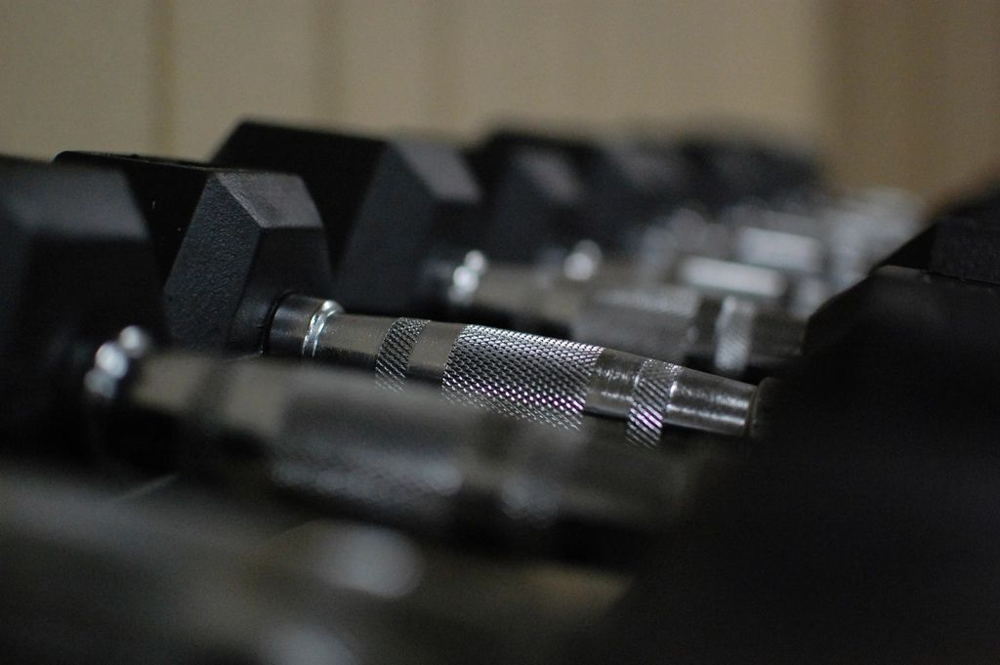
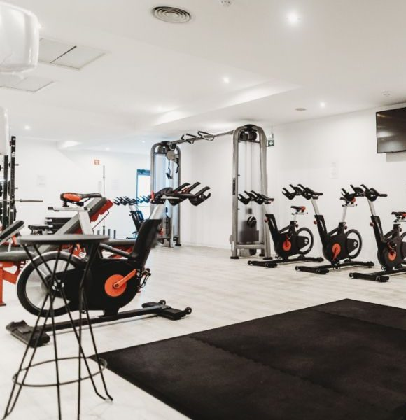

Ana sayfa / Salon
Salon: ağırlıktan kardiyoya kulvar kulvar
Ağırlık ve kardiyo ekipmanları, yanında solaryum. Bu sayfada alanları, ilk antrenmanınızın akışını, nabzınıza göre tempo kulvarlarını ve salonda işinize yarayacak küçük kuralları bulacaksınız.

Temsili görselAlanlar
Her alanda ne yapılır, kime uyar, nasıl başlanır? Ekipmanın tam listesini ve yerleşimi salonda görebilirsiniz; aşağıdakiler başlangıç için yol gösterir.
Serbest ağırlık
Dambıl, halter ve ağırlık plakaları. Örnek hareketler: dambılla omuz itiş, kadeh tutuşla çömelme (goblet squat), tek kolla çekiş. Önce hafif ağırlıkla hareket kalıbını öğrenin, sonra yükü artırın.
Makineler ve istasyonlar
Hareketi yönlendiren makineler ağırlığı güvenle denemenizi sağlar. Koltuk ve kol ayarlarını boyunuza göre yapmayı unutmayın; ilk kullanımda ayarları sormaktan çekinmeyin.
Kardiyo
Koşu bandı, bisiklet ve benzeri ekipman. Isınma için 5–10 dakika, sakin tempoda dayanıklılık için daha uzun; aralık antrenmanında hızlanıp yavaşlayarak.
Aralık ve kondisyon
Kendi turlarınızı aralık zamanlayıcıyla kurun: kardiyo ekipmanında ya da çömelme, şınav, plank gibi vücut ağırlığı hareketleriyle.
Solaryum
Ayrı bir hizmet olarak salonda bulunuyor. UV ışını risk taşır; önce güvenlik rehberini okuyun.
Program, ölçüm ve takip
Kişisel antrenman, program desteği ve düzenli ölçüm seçeneklerini sorun; size uygun olanı birlikte konuşalım.
İlk antrenmanınız: dört etaplı bayrak
Bayrak yarışı gibi düşünün: her etap bir sonrakine sopayı teslim eder. Toplam 45–60 dakika, acele yok.
- Etap1
Isınma
5–10 dkHafif tempoda kardiyo, omuz-kalça-diz için eklem çevirmeleri ve bugün yapacağınız hareketlerin yüksüz birkaç tekrarı.
- Etap2
Teknik
yaklaşık 10 dk3–5 hareketi çok hafif yükle deneyin. Sırt düz, diz ayak ucu yönünde, hareket kontrollü. Emin olamadığınız hareketi sorun.
- Etap3
Ana bölüm
20–30 dkBüyük kas gruplarını çalıştıran 4–6 hareket, her biri 2–3 set, 8–15 tekrar. Son tekrarlar zorlamalı ama form bozulmamalı.
- Etap4
Soğuma
5–10 dkYavaş yürüyüş, sakin nefes ve çalıştığınız kaslar için hafif esneme. Su için, nasıl hissettiğinizi not edin.
Nabız kulvarları
Yaşınızı girin; beş tempo kulvarının yaklaşık nabız aralıklarını görün. Kardiyo ve aralık antrenmanında hangi kulvarda koştuğunuzu bilmek, yüklenmeyi ayarlamayı kolaylaştırır.
Isınma, soğuma ve toparlanma. Rahatça sohbet edebilirsiniz.
Uzun, sakin kardiyo. Konuşabilirsiniz; nefes biraz hızlanır.
Tempo çalışması. Cümleler kısalır, odaklanmanız gerekir.
Aralık antrenmanının çalış bölümü. Birkaç kelimeden fazlası zorlaşır.
Çok kısa yüklenmeler; yalnız düzenli antrenman yapanlar için.
Bu hesap genel bir tahmindir ve kişiden kişiye değişir. Kalp-damar rahatsızlığınız ya da yüksek tansiyonunuz varsa veya nabzı etkileyen bir ilaç (ör. beta bloker) kullanıyorsanız antrenman temponuzu doktorunuza danışın.

Temsili görselAğırlıkta beş temel kural
Önce form, sonra yük
Hareketi doğru yapabildiğiniz ağırlıkla başlayın. Form bozuluyorsa yük fazladır.
Kontrollü tempo
Ağırlığı savurmayın; kaldırırken de indirirken de kontrol sizde olsun.
Nefes
Zorlandığınız anda nefes verin; nefesinizi uzun süre tutmayın.
Küçük adımlarla artış
Hedef tekrarları rahatça tamamladığınızda yükü küçük bir adımla artırın.
Toparlanma
Aynı kas grubunu art arda iki gün yormak yerine arada dinlenme bırakın; uyku da antrenmanın parçası.
Salon adabı
Herkesin kendi kulvarında rahat çalışması için birkaç basit kural.
Ekipmanı yerine koyun
Dambılları rafına, plakaları askısına geri bırakın.
Havlu serin, teri silin
Kullandığınız sehpayı ve makineyi işiniz bitince silin.
Paylaşın
Setler arasında istasyonu paylaşmaktan çekinmeyin; "kaç setiniz kaldı?" diye sormak olağandır.
Aynanın önünü kapatmayın
Başkalarının da formunu görmesi gerekir.
Müzik kulaklıkta kalsın
Telefon görüşmelerini de kısa ve alçak sesle yapın.
Çantanızda ne olsun?
İşaretledikleriniz bu cihazda hatırlanır; evden çıkmadan önce bir göz atın.
Salonu yerinde görün.
Gelmeden önce yazın; uygun saati birlikte belirleyelim.